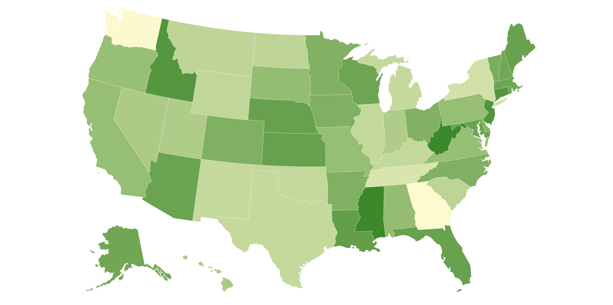
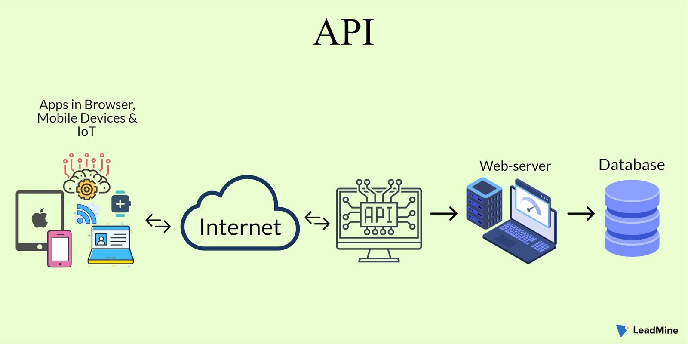
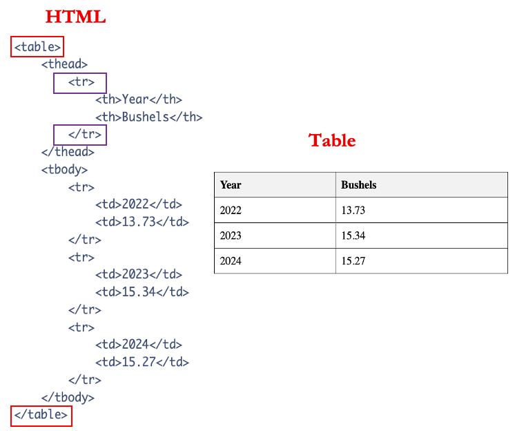

## FILLED VERSION
library(readxl) ## Data Extraction --- E
library(dplyr) ## Data Transformation --- T
library(ggplot2) ## Data Visualization --- VCensus API
Session 1: Introduction to Data Extraction
0. Logisitcs
- Use of CourseKata SPill (chatgpt - more info is needed)
- Organization of workshop of lecture and questions throughout
- Parts
- Questions
- There are your:
- Questions
- Bugs/Errors
1. Goals & Objectives (Entire workshopr)
Session 1: Introduction
Understand the importance of extracting dynamic data (via HTML and APIs) in modern data analysis and teaching
Session 2: Getting Weather Data via OpenWeather API
In this session, we dive into OpenWeather API and learn to use packages like httr2 to execute API calls. We will also discuss URLs, queries, data structures, and more.
Session 3: Scraping NFL Sports Data
In this session, we will use Pro-Football Reference to learn how to extract and clean HTML table data for use in statistical analysis and visualizations.
Session 4: Putting it All Together (Project)
In this project, we will use HTML scraping joined with the OpenWeather API to create our own cloropleth map of Iowa.

1.a. Goals for Introduction
Analyzed static player statistics by loading an Excel file into R to filter the data and create a comparative boxplot.
Introduced dynamic data extraction by explaining how to use web APIs to send a request containing a query for structured JSON data from external servers.
Demonstrated web scraping by using an R package to directly extract a data table from an HTML webpage.
Advocated for a modern educational approach that teaches students to actively find and extract live data rather than passively using clean, static files.
#——————————————————————————-
2. Conceptual Foundation
P1. Traditional Approach
My mentor, Allan, says “ask good questions”…
Statistical Question: Who had the most impactful first season in terms of points: Michael Jordan, LeBron James, or Kobe Bryant?
Let’s answer this question.
I recently submitted a manuscript on this exact dataset, so let’s use it as our starting point.
We’ll begin by working with a static excel file, named
nba_data.xlsx, that contains per-game stats for each player’s 15 seasons in the NBA.
Let’s Load the pertinent libraries
Task 1: ____ Fill in the code based common tidyverse packages.
## EMPTY VERSION
# library(____) ## Data Extraction --- E
# library(____) ## Data Transformation --- T
# library(____) ## Data Visualization --- V- Task 2. ____ Complete the appropriate function name and fill in the file name into below.
## FILLED VERSION
nba_df <- read_xlsx("nba_data.xlsx", sheet = "modern_nba_legends_08302019")## EMPTY VERSION
# nba_df <- read_*("____", sheet = "modern_nba_legends_08302019")Let’s view the data …
Task 3. ____ Use the
glimpsefunction to view the data
## FILLED VERSION
glimpse(nba_df)## EMPTY VERSIONQ1.
First, take a moment to look over the data yourself. Then, discuss with your peers if you see any issues that need cleaning.
Ans Q1.
The dataset is clean; the data types are properly assigned, with numeric variables stored as numbers and categorical variables stored as characters.
Note 1: Look at the season variable
Now let’s clean the focus on the data frame that we are after
Task 4. ____ Use the
filter()function to select only the rows where theSeasoncolumn is equal to “season_1”.
## FILLED VERSION
season_1_df <- nba_df %>%
filter(Season == "season_1")## EMPTY VERSION
# season_1_df <- nba_df %>%
# ___( _____ == "season_1")- Now lets look at a plot of their points to answer the statistical question
Task 5. ____ Pipe the season_1_df data into ggplot, map the Name column to the x-axis and PTS to the y-axis, and then add a geom_boxplot() layer to visualize the data.
## FILLED VERSION
season_1_df %>%
ggplot(aes(x = Name, y = PTS)) +
geom_boxplot() +
theme_bw() ## EMPTY VERSION
# ____ %>%
# ggplot(aes(x = ____, y = ____)) +
# geom_*() +
# theme_bw() - Note 2: We could have spruced it up but here we just wanted to answer the question, if you have the urge please do so.
Q2.
What conclusions could be made about this plot?
Ans Q2.
Based on the median values, Michael Jordan (MJ) had the most impressive 1st season, followed by LeBron James (LJ), and then Kobe Bryant (KB).
The plot also reveals that MJ’s scoring was the most variable and reached the highest peak, while KB’s point distribution was the lowest and most concentrated.
Now what about, Magic Johnson or Wilt Chamberlain (historic players)
Maybe Luka Dončić or Ja Morant (more recent players)
If I wanted to add this data I need to go to the original source not an excel sheet to do this
#——————————————————————————-
P2. Active Data Extraction
Shift students from being passive data users to active data seekers
Move beyond the idea of “waiting for clean data” to learning how to access, validate, and clean it themselves
Teach both the skill to extract and the capacity to teach extraction
Note 3: (TODOs: Make this into a P and Note)
Why this matters: We as instructors should not just rely on pre-built packages or static datasets. The digital world changes constantly — websites, APIs, and file structures evolve.
Our responsibility: Teach students (and ourselves) how to adapt and access real-world data sources. Equip learners with skills to extract, not just consume pre-extracted content.
Despite the growing importance of live data, most introductory courses still rely heavily on static, pre-cleaned datasets. This limits students’ exposure to the realities of modern data work.
Key idea: Flat files can still be dynamic depending on how they’re maintained — but we use the term “dynamic” here to emphasize external, real-time data access through APIs and web scraping.
The availability of dynamic, frequently updated data — especially via web APIs — has grown exponentially in recent years. This shift demands new strategies in how we teach data access.
Q3. (BLANK)
Ans Q3. (BLANK)
#——————————————————————————-
P3. Static and Dynamic Sources of Data Extraction
2.a. Static Files or Sources Extraction
[IMAGE of this]
Examples: CSV, Excel files
Typically unchanging unless manually edited
Often pre-loaded into classroom activities
May still require cleaning (e.g., column names, missing data)
Note 4:
Messy data is not always a bad thing
2.b. Dynamic Sources Extraction
Definition: Data sources that update over time or are externally controlled (i.e., you don’t own the source)
Two primary types:
- Application Programming Interface APIs – Designed to serve structured data upon request (e.g., player stats, weather)
[IMAGE of this]
2. Hypertext Markup Language **HTML/Web Pages** – Seen as dynamic when content changes
(especially sports, news, etc.)[IMAGE of this]
HTML pages are primarily designed for human readability, while APIs are designed for structured machine access. Both offer pathways to dynamic data, each with different advantages and challenges.
Bridging the gap between classroom exercises and real-world data practice requires that students learn not just how to analyze data — but how to find it, extract it, and prepare it themselves.
Note 5:
HTML can be treated as static or dynamic depending on how frequently the page updates. For this workshop, we treat HTML as dynamic, especially for sports data.
Q4.(BLANK)
Ans Q4.(BLANK)
#——————————————————————————-
P4. What are Web APIs?
There are many kinds of APIs, but in this workshop, we’ll focus specifically on web APIs — tools designed to let us request and retrieve data from online sources.
In R, we’ll act like a piece of software making those requests, allowing us to query live data programmatically.

API stand for Application Programming Interfaces
It is a way for software to communicate with one another
One way it work is that it allow programs to request a query from a data base directly from external servers in a structured format (most often JSON).
Q5.(BLANK)
Ans Q5.(BLANK)
{
"player": "LeBron James",
"points": 27.1,
"team": "Lakers"
}- The keys are
players,pointsandteam - The values for the corresponding keys are
LeBron James,27.1,Lakers
Note 7:
- There are a lot of acronyms
- JSON - Java Script Object Notation - javascript is web developing software (chatgpt)
(Mention Querying data base more as an action)
Q3. What does JSON? Answer: Java script object notation
Note 8:
Describe Image
Flow of Data via API (vrogue.co)A user sends a request via the internet → the API talks to the server → the server queries the database → the API responds with data, often as JSON. (Mention Querying data base more as an action)
P15.
Learning to work with web APIs teaches students more than just how to extract data — it gives them the tools to:
- Locate relevant APIs (e.g., weather, sports, music)
- Construct and test their own API requests
- Interpret JSON responses (including nested structures)
- Transform the results into tidy formats ready for analysis
(Mention Querying data base more as an action)
P16
APIs aren’t just technical tools, they’re increasingly the primary way to access and query data stored in external databases.
In today’s fast-changing digital environment, students must be equipped to retrieve and work with information from live, external sources, not just rely on pre-cleaned datasets.
Note 9:
This is what pushes students from passive observers of data to active agents in its collection, structure, and use. It aligns closely with what real-world data science jobs require, especially when you’re no longer just analyzing data, but acquiring it.

The use of APIs requires keys, which are unique and secret codes that are used to authorize your request and identify your user and billing information. Consequently, keeping these codes secret is imperative. To do so, store API keys in environment files which reside on your computer, and not coded into variables or available in plain text on your working files.
#——————————————————————————-
P5. Using tidycensus
Introduction to tidycensus
The tidycensus package is a wrapper for the U.S. Census Bureau’s APIs. It is designed to make it simple to download, manage, and map Census data within R. It handles the API requests and returns clean, tidy data frames ready for analysis.
Step 1: Get a Census API Key
Before using the API, you need a key. This is a simple, one-time process.
- Go to the Census API Key request page: https://api.census.gov/data/key_signup.html
- Fill out the short form with your organization and email address.
- Your API key will be sent to your email almost immediately. Keep it handy.
Step 2: Set Up Credentials
The tidycensus package includes a function to store your API key securely in the .Renviron file, so you only have to do this once per computer.
## FILLED VERSION
# install.packages("tidycensus") # Run this once if needed
library(tidycensus)## EMPTY VERSION
# install.packages("tidycensus") # Run this once if needed
# library(____)## FILLED VERSION
# Replace "YOUR_KEY_HERE" with the key you received via email.
# The `install = TRUE` argument saves it to your .Renviron file.
# census_api_key("YOUR_KEY_HERE", install = TRUE)## EMPTY VERSION
# The `install = TRUE` argument saves it to your .Renviron file for future use.
# census_api_key("____", install = ____)[We are going to run this in a moment]
⚠️ Crucially, you must restart your R session for the key to be available. Go to Session > Restart R in RStudio. From now on, tidycensus will automatically find and use your key.
Step 3: Load Required Packages
For this analysis, we’ll need tidycensus for data retrieval and dplyr and ggplot2 for data wrangling and visualization.
## FILLED VERSION
library(tidycensus) ## Data Extraction --- E
library(dplyr) ## Data Transformation --- T
library(ggplot2) ## Data Visualization --- V## EMPTY VERSION
# library(____) ## Data Extraction --- E
# library(____) ## Data Transformation --- T
# library(____) ## Data Visualization --- VStep 4: Find Your Variables
The Census Bureau offers thousands of variables. A key step is finding the specific codes for the data you need. We can use the load_variables() function to search. Let’s find the variable code for “median household income” in the 2022 American Community Survey (ACS) 5-year estimates.
## FILLED VERSION
# Load all variables from the 2022 5-year ACS dataset
v22 <- load_variables(2022, "acs5")
## *********** Look at how many rows this data frame has ************* ##
# Search for the variable we want
v22 %>%
filter(grepl("Median Household Income", label, ignore.case = TRUE))## EMPTY VERSION
# Load all variables from the 2022 5-year ACS dataset
# v22 <- load_variables(____, "acs5")
# Search for the variable we want by filling in the string below
# v22 %>%
# filter(grepl("____", label, ignore.case = TRUE))The search reveals that the variable code we want is B19013_001.
Step 5: Request Census Data
Now we use the main function, get_acs(), to download the data. We’ll request the median household income for every county in Iowa.
## FILLED VERSION
# Request the data for Iowa counties
iowa_income_df <- get_acs(
geography = "county",
variables = c(med_income = "B19013_001"), # Provide the variable code
state = "IA",
year = 2022
)## EMPTY VERSION
# Request the data for Iowa counties
# iowa_income_df <- get_acs(
# geography = "____",
# variables = c(med_income = "____"), # Provide the variable code
# state = "____",
# year = ____
# )Step 6: Explore and Visualize the Dataset
Use glimpse() to examine the data structure. You’ll see it returns a tidy data frame with columns for the estimate and the margin of error (moe).
## FILLED VERSION
glimpse(iowa_income_df)## EMPTY VERSION
# glimpse(____)Now, let’s create a simple plot of the 10 counties with the highest median income.
## FILLED VERSION
iowa_income_df %>%
slice_max(order_by = estimate, n = 10) %>%
ggplot(aes(x = estimate, y = reorder(NAME, estimate))) +
geom_col(fill = "dodgerblue") +
labs(
title = "Top 10 Iowa Counties by Median Household Income (2022)",
x = "Median Household Income (USD)",
y = "County"
) +
theme_minimal()## EMPTY VERSION
# iowa_income_df %>%
# slice_max(order_by = ____, n = ____) %>%
# ggplot(aes(x = ____, y = reorder(NAME, ____))) +
# geom_col(fill = "dodgerblue") +
# labs(
# title = "____",
# x = "____",
# y = "____"
# ) +
# theme_minimal()[Make Question Transition to then Web Scrapping]
Q6. (BLANK)
Ans Q6. (BLANK)
#——————————————————————————-
P5. What is Web Scraping?

P17:
Websites are structured using HTML (Hypertext Markup Language), which acts as the backbone for displaying and organizing content on the internet.
When data is arranged in rows and columns—like sports stats, schedules, or financial figures—HTML tables offer a clear and structured way to present that information directly on the page.
Tables make it easy for both humans and computers to interpret patterns, compare values, and extract key insights.
Note 12:
We don’t want to waste time copying and pasting tables into a CSV, then reformatting and cleaning them again in R.
Ideally, we want to access the data directly and bring it into R in a structured format — where we expect to do some cleaning, but we skip the unnecessary manual steps.
P18:
Below is an image of code for html table and the actual table that it would produce
{width=“200”, height = “1000”}
- Note 13:
- Highlight the following concepts:
- beginning and the end of table
- the column name
- each Row
- How it translate into a human readable table
- Emphasize that we’re only focusing on
<table>tags for this workshop
- Highlight the following concepts:
- P19.
Now lets see one of the libraries that allows us to scrape in R
Note 14: You do not have to install this but it is not part of CRAN, it used to be, so you have to install it via this way using this repo
# install.packages("devtools")
# devtools::install_github("crubba/htmltab")library(htmltab)Note 14: Lets go to the url via webbroswer
url <- "https://en.wikipedia.org/wiki/List_of_counties_in_Iowa"P20.
This function requires 2 args url and table number we can guess at it and may work
iowa_state_counties_df <- htmltab(url,1)iowa_state_counties_df <- htmltab(url,2)Note 15:
Unless you know html and want to look at the source code or you what exactly a table looks like you will have to guess sometimes
We can get the warning to go away by …
P21.
This is what I would call static because the counties are note changeing but if we wanted baseball data at which currently everyday new data is displayed it is ideal that we have a more robust method of fgetting this data rather using htmltabs
- P22.
Check out article: Web Scraping in the Statistics and Data Science Curriculum: Challenges and Opportunities - Mine Dogucu & Mine Çetinkaya-Rundel
- P23.
- Much like APIs, lots of relevant and useful information is available directly on webpages, which are readable by humans rather than APIs which are designed for machine access.
- By learning this skill, students are able to:
- Locate relevant sources (e.g., sports data from Pro Football Reference)
- Understand how websites deliver and organize content
- Transform and clean data for analysis and visualization
- Often times, HTML tables contain unexpected structures or data types (images, links, etc) and can present a challenge that develops not only data cleaning skills, but intention, planning, and adaptability when handling and analyzing difficult data.
Q7. (BLANK)
Ans Q7. (BLANK)
————————————————————————
3. Hands-On Coding Activity (chatgpt: make it)
Goal: Engage participants in applying both API and HTML extraction methods.
Part A: API
Use a new function from the
spotifyrpackageCreate a simple plot using the data
Ask comprehension questions:
- How does this differ from static file use?
- What’s confusing about working with API responses?
P6.
P7.
P8.
Part B: HTML
Extract state-specific data from a chosen Wikipedia page
Guide participants through cleaning it (if time allows)
Ask guiding questions:
- Did the table number match what you expected?
- What challenges did you face?
- (Example prompt written on the board: “Not every state’s table is the same.”)
P9.
P10.
P11.
3. Session 1 Activity: API and HTML in Practice
This activity will give you a chance to apply the skills you’ve just learned. We’ll start by fetching live data from the Spotify API, then visualize it, and finally, supplement it with data scraped from a Wikipedia page.
P6. Task 1: Get an Artist’s Top Tracks
Let’s start by exploring a different function from the spotifyr package. Your first task is to get the top tracks for the artist ‘Queen’ in the US market. After retrieving the data, use glimpse() to inspect its structure.
Note: You will need the access_token created earlier in the session.
## EMPTY VERSION
# top_tracks_df <- get_artist_top_tracks(
# "____", # Artist Name
# market = "____", # Market (e.g., "US")
# access_token = access_token
# )
#
# ____(top_tracks_df)## FILLED VERSION
top_tracks_df <- get_artist_top_tracks(
"Queen",
market = "US"
)
glimpse(top_tracks_df)Q6.
Take a look at the output from glimpse(). What are the key differences between fetching data this way versus loading the static nba_data.xlsx file from earlier? What’s one thing you find confusing about this API data structure?
Ans Q6.
The most significant difference is that this data is live; it reflects current popularity on Spotify, whereas the Excel file was a fixed snapshot in time. The API also returns a data frame with many columns we didn’t ask for (like track_uri, available_markets), which is common.
A confusing aspect might be the nested data, such as the album.images column, which contains more data inside it. We are getting exactly what the API developer decided to send us, which requires us to adapt.
P7. Task 2: Visualize Track Popularity
Now, let’s turn that raw data into an insight. Your task is to create a bar chart of the top 5 most popular Queen tracks from the data you just fetched. You will need to:
- Pipe the
top_tracks_dfdata frame. select()only thetrack_nameandtrack_popularitycolumns.- Use
slice_max()to keep only the 5 tracks with the highest popularity. - Pipe this into
ggplotto create a bar chart with tracks on the y-axis and popularity on the x-axis.
## EMPTY VERSION
# top_tracks_df %>%
# select(____, ____) %>%
# slice_max(order_by = ____, n = 5) %>%
# ggplot(aes(x = ____, y = ____)) +
# geom_col() + # geom_col is great for pre-summarized data!
# theme_bw()## FILLED VERSION
top_tracks_df %>%
select(track_name, track_popularity) %>%
slice_max(order_by = track_popularity, n = 5) %>%
ggplot(aes(x = track_popularity, y = reorder(track_name, track_popularity))) +
geom_col() +
labs(
title = "Top 5 Most Popular Queen Tracks on Spotify",
x = "Popularity Score",
y = "Track Name"
) +
theme_bw()Q7.
Based on your plot, what can you conclude about Queen’s most popular music on Spotify right now?
Ans Q7.
Based on the plot, we can quickly identify the top 5 songs by their popularity score. “Bohemian Rhapsody” is almost always the most popular, followed by other hits like “Don’t Stop Me Now” and “Another One Bites the Dust.” The chart gives us a clear, ranked visualization of current fan favorites.
P8. Task 3: Scrape Supporting Album Data
APIs give us great data, but sometimes we need to supplement it from other sources. Let’s grab Queen’s studio album list from Wikipedia. Your task is to use the htmltab package to scrape the main studio albums table from their discography page.
The URL is: "https://en.wikipedia.org/wiki/Queen_discography"
You may have to guess the table number (which). Once you find the correct one, view the first few rows with head().
## EMPTY VERSION
# library(htmltab)
#
# url <- "https://en.wikipedia.org/wiki/Queen_discography"
#
# # You may need to try which = 1, which = 2, etc.
# albums_df <- htmltab(doc = ____, which = ____)
#
# head(albums_df)## FILLED VERSION
library(htmltab)
url <- "https://en.wikipedia.org/wiki/Queen_discography"
# After trying a few numbers, we find the correct table is 2.
albums_df <- htmltab(doc = url, which = 2)
head(albums_df)Q8.
Did the table number you found (which = 2) match what you first expected? What challenges did you face, and why is this method less predictable than using an API?
Ans Q8.
Most people would guess which = 1, but that often grabs a page index or summary box. The correct table was the second one on the page.
Challenges include unpredictable table numbering and messy column names (e.g., Title vs. Details). HTML scraping is less predictable because websites are built for humans, not machines. The structure can change at any time without warning, and there’s no formal documentation like an API has. This exercise highlights the need for flexibility and inspection when scraping web pages.
4. Reflection (make questions within CourseKata to solidyfy approach)
- What did we learn?
- How does this connect to the original Goals & Objectives of the session?
- How do you see yourself using this in your classroom?
- What kinds of APIs or HTML sources would be most relevant for your students?
5. Misc. Questions/Ideas
- Set expectations and workshop goals
- Why data extraction matters: relevance to real-world education
- Overview of the layout / table of contents
- Discuss libraries used (tidyverse, rvest, httr, etc.)
- Best practices (e.g., avoiding hardcoding, consistent comments)
- Adapting to changing APIs/websites
- Anecdote: Spotify example of lost API access
- Explain tidy data: snake_case column names, correct data types
- Emphasize code flexibility — developers can change APIs overnight
- Activity: Scaffolding + Code review using example(s)